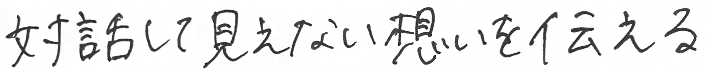
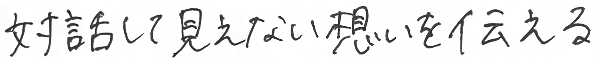
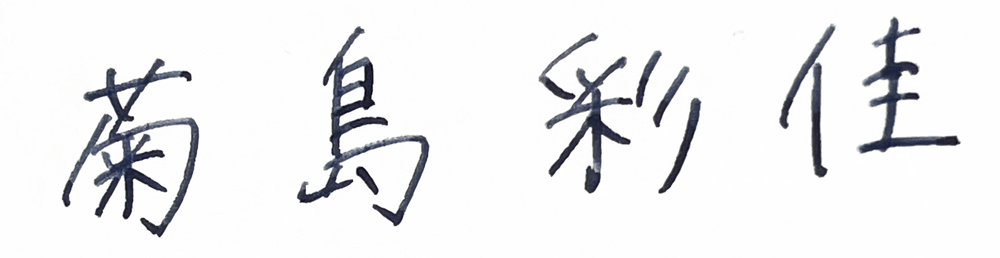

VALUE
 

Profile


Sayaka Kikushima
２０００年生まれ | 東京都出身 | 神奈川県・宮城県育ち
趣味 : チョコミント探し | お菓子作り | カメラ | 建物巡り | 雲を眺める | K-pop
学歴 | 経歴
- 2022.03
- 専修大学 商学部マーケティング学科卒業
- 2022.04
- 東京デザインプレックス研究所
デジタルコミュニケーションデザイン専攻 入学 - 2022.10〜現在
- 株式会社ユニゾン・テクノロジー
デザイナーとして従事(長期インターン)
Web広告、バナー、LINEリッチメニュー制作を担当 - 2023.10
- 東京デザインプレックス研究所
デジタルコミュニケーションデザイン専攻 修了
Skill